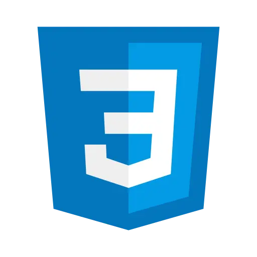

Experiencia
Proyectos creados por mí.
Expanding Cards
Proyecto de una página web que contiene una serie de tarjetas que se expanden al pasar por ellas.
Ver RepoBento Box
Proyecto de una página web que simula una bento box japonesa, anunciando un producto. Ver RepoHabilidades
Lenguajes que utilizo.
WEB FRONT-END


POO BACK-END
BASES DE DATOS
HERRAMIENTAS DE DESARROLLO

SOFT SKILLS
TRABAJO EN EQUIPO
COMUNICACIÓN EFECTIVA
RESOLUCIÓN DE PROBLEMAS